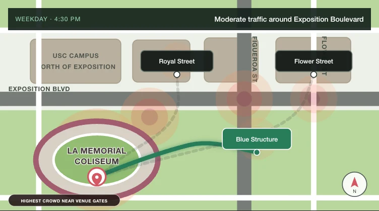
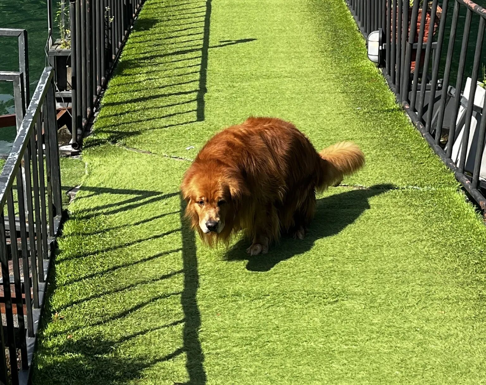
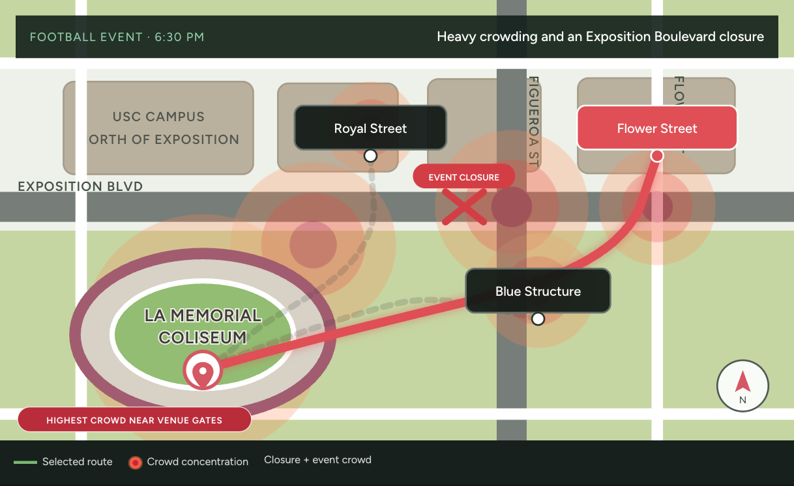
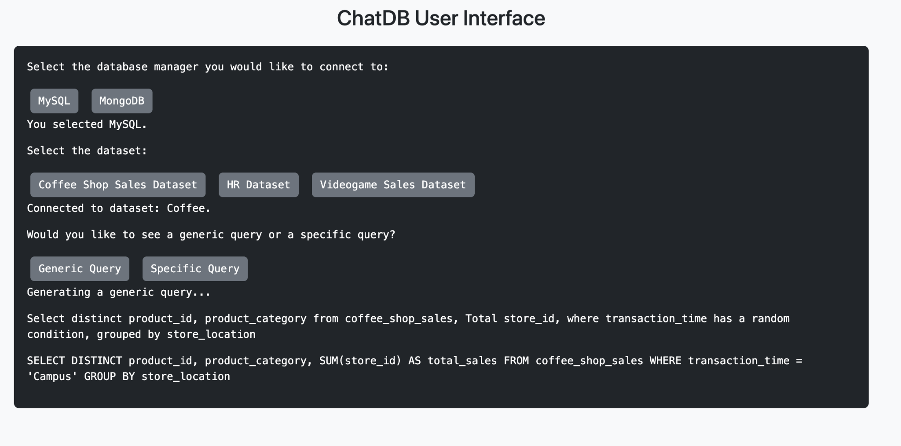

Tableau Usage Dashboards
A heavily used finance workbook took nearly two minutes to open. Compare its load time with a typical report.
Read the dashboard study2.1 sLoad time
120-second scale
Hi, I’m Brandon.
I bring product design, data, and engineering together to build tools people can trust. At DaVita, that means making healthcare work easier for nurses, field leaders, and analysts.
A heavily used finance workbook took nearly two minutes to open. Compare its load time with a typical report.
Read the dashboard studyOn game day, the fastest place to park changes. Switch the arrival conditions to see where the planner sends you.
Try the full route planner

Blue Structure · 17 min
Field teams kept using email. Five analysts got one queue with owners and priorities. The team resolved 214 of 243 requests in Q3.
Inspect the request trackerIncoming requests
What does a WHERE clause actually remove? Filter three practice transactions and follow the change from the query to its results.
Explore the query builderSELECT transaction_id, transaction_qty
FROM coffee_shop_sales
WHERE transaction_qty > 10;
| ID | Quantity |
|---|---|
| 101 | 7 |
| 102 | 14 |
| 103 | 21 |
The model follows the spine and tail across frames. Reveal the six landmarks it uses to evaluate this posture.
Inspect the pose model
A heavily used finance report took 115.7 seconds to open. Typical load time was 2.1 seconds.
Explore the usage dashboardsFor the HSG inbox, the problem started with field teams waiting on access, reports, and answers they could trust.
Listen for what is getting in the way.I studied Data Science + Biological Sciences at USC. Research taught me to trace an answer back to its evidence. I bring that same habit to product decisions.
(01) / About my work

I enjoy making complex problems easier to understand. My focus is creating intuitive experiences that are built around real needs and deliver meaningful value. At DaVita, I have shipped six internal products for nurses, field leaders, managers, and analysts, including clinical reports, staffing tools, an Outlook request tracker, safety dashboards, and an AI search rollout.
I studied data science and biological sciences at USC. I check definitions, trace where a number came from, and spend time with the people who will use the finished product. Their questions shape what I build and how I measure the result.
The record
Platforms & methods
Python · C++ · Java · SQL · R
Product metrics · Analytics · A/B testing · PRDs · Requirements
ETL/ELT pipelines · APIs · System design · Git · Linux/Bash
AWS · GCP · Azure · Tableau · Looker · Power BI · Jira · Excel · MATLAB
(02) / Selected work
Five dashboards cover readership, repeat visits, access, and content health. A second team added its 19 workbooks in one day.
214 of 243 requests resolved in Q3


(03) / Experience